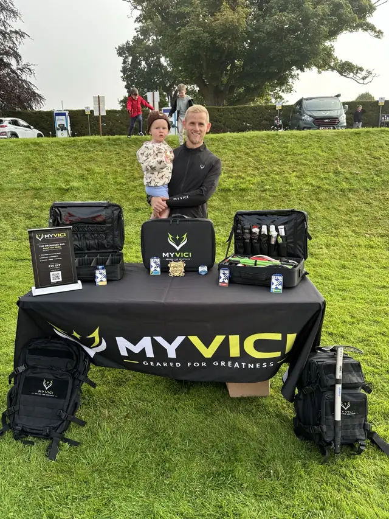

Prepare.
Do the work before the moment comes. Give the essentials a place. Leave ready.
Our story / Built from experience.
The organiserMy Vee-Chee.
Born from the miles, the early starts and the journey to the start line. Practical gear for people who keep showing up.
01 / Why the name
“I came, I saw,
I conquered.”
MYVICI takes its inspiration from Veni, Vidi, Vici. For us, that mindset starts long before the finish: prepare properly, keep moving and meet the challenge in front of you.
Progress takes discipline. Some days it’s a start line. Some days it’s simply getting out the door. Both begin with showing up ready.
“My Vee-Chee” is our chosen brand pronunciation, not a claim about historical Latin pronunciation.
Do the work before the moment comes. Give the essentials a place. Leave ready.
Get outside. Find your rhythm. Let the kit do its job so you can do yours.
Take on your own challenge. Learn from it. Bring that experience to the next one.

02 / The origin
I’m Lewis, an ultra runner and the founder of MYVICI.
Ultra running meant race weekends, airports, camper travel and long days in the mountains. It also meant essential kit spread across too many bags. Shoes in one, nutrition in another, electronics somewhere underneath everything.
The organiser came from wanting to solve that practical problem. The important kit needed one proper home — somewhere to pack it, see it and know it was ready before leaving.
That is where MYVICI started. Every product that follows has to earn its place in the same way: useful in practice, informed by experience and improved when something can work better.
Lewis Founder, MYVICIReal race weekends shape what we make.
Travel, mountains and the miles between.
Practical first. Keep refining the details.
Built for the journey.
Start with the kit that gets you ready.
The MYVICI Running Organiser.